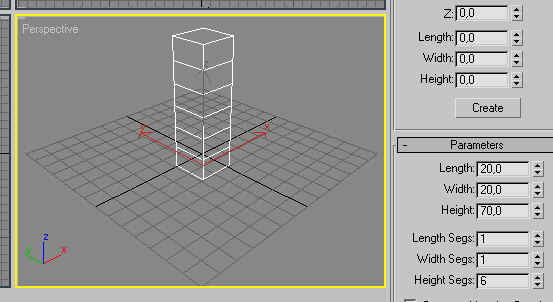
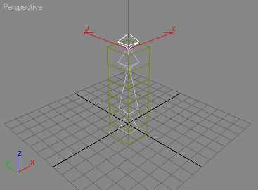
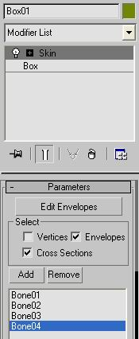
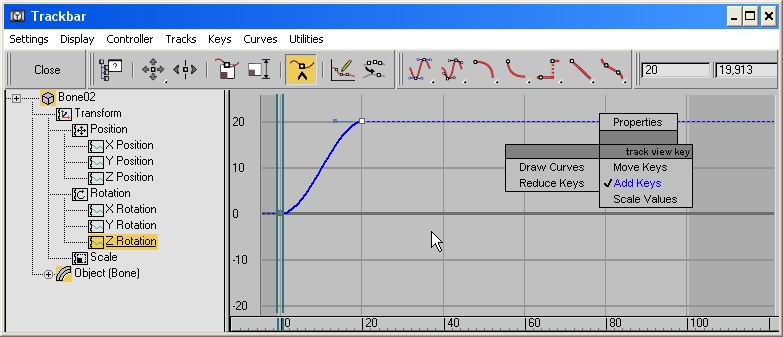
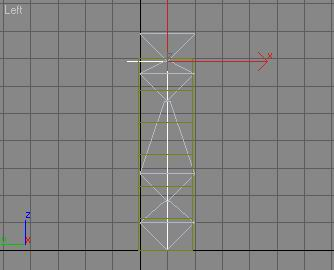

Tutorial: Exporting a skeleton from 3dsmax 5
This tutorial shows how to export a basic skeleton from 3D studio max 5.
Create the scene
-
Create a Box with several height segments in the perspective view.

-
Add bones in the front view, in order to be able to skin this box. Here I change bones height and width to 20...

-
Add the skin modifier to the box and attach the bones which have just been created.

Now, if you move or rotate the bones, the mesh will 'follow' them.
Bones animation
In order to animate the box, let's create some keys in a trackview ("Graph Editors/New track view"). Another way is to 'play with the setKey button.
-
Select Bone02 for example.
Create keys at frame 0 and 20 in the Z rotation track and move the one at frame 20.

Do the same thing for another bone and another axis...
-
Exporter uses the controller tracks in order to know when it should set animation keyframes.
-
The last thing to do is applying a material, or you will not be able to export.
-
Now, the box can be exported by the exporter. Select it, uncheck "export texure information" because Texture coordinates have not
been generated by UVWMap modifier for example, and there will be an error if you try to export. Write the animation name you want,
but it must be the same as the one you use in your OGRE application (look at the SkeletonAnimation Demo if you want a sample).
But a great feature would be to export Inverse Kinematics... It's possible !
Inverse Kinematics
-
Select Bone01 and go to "Animation/IK solver/HI solver", now select the last bone. This step creates an IK Chain.

-
You can animate it with its track view, with a spline as a path or anything else you want. But there will not be any keys in bones controllers tracks.
And... if there is no key, there is no animation. Just add them in a track view. You can use the controller and sub_controllers you want
for Rotation and Position, just choose a track and add your keys. Do that to all the bones.
That's all ! Have fun with this exporter !
Return to homepage
If you have seen any errors or have any suggestions, mail me at mallard@iie.cnam.fr.